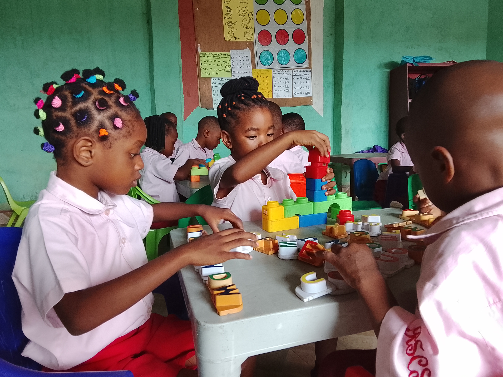

Early Childhood Education
Preparing students with the knowledge, skills and practical understanding needed to support young children in their early years of learning and development.
Understanding Early Learning
Early Childhood Education at RSIMT introduces students to the principles of teaching, caring for and supporting young children.
Students learn how children develop, how they learn through play and activities, and how to create safe, supportive and engaging learning environments.
Knowledge and Practical Skills
Students explore important areas that prepare them to work with young children.
Child Development
Understanding the physical, emotional, social and intellectual development of young children.
Early Learning
Exploring how young children learn through play, interaction, stories and everyday activities.
Teaching Methods
Learning suitable approaches for creating meaningful and enjoyable learning experiences.
Child Care & Safety
Understanding how to provide safe, caring and supportive environments for children.

Learning Beyond the Classroom
RSIMT encourages students to connect classroom knowledge with practical experiences.
Through activities, observation and practical work, students can develop confidence in applying what they learn when working with young children.
Skills Students Can Develop
Communication
Developing clear and positive communication with children.
Creativity
Using creative activities to encourage children's interest in learning.
Patience
Developing patience and understanding when working with young learners.
Practical Skills
Building useful skills for supporting children's learning and development.